ValuSpec：在目标验证之前给候选分支估值
论文： ValuSpec: Plug-and-Play Candidate Valuation before Target Verification for Tree-Based Speculative Decoding
作者： Liang He、SiYuan Ma、Qishi Zhan、Yongqi Fan、Mingyu Cao、Qizhen Lan、Zhaolu Kang、Xilu Wang。第一作者来自同济大学；合作机构包括南洋理工大学、Marquette University、腾讯、萨里大学、UTHealth Houston 和北京大学。
来源与日期： arXiv:2610.31338，2026-10-22 v1；本笔记核对时间为2026-10-26。PDF首页印有NeurIPS 2026会议字样，本轮未独立核验录用状态。
代码： PDF checklist明确说明实现代码尚未公开。主类别为LLM，关注树形投机解码、检索草稿复用、无训练阈值校准。
1. 背景和问题
大模型自回归生成的延迟来自串行依赖：后一个词必须等前一个词确定，因而一次目标模型前向往往只能把输出向前推进一个位置。投机解码把便宜候选和昂贵裁决分开。较小模型先给出若干词，大模型并行计算这些位置的条件分布，沿着符合自身决策的路径接受连续前缀。候选足够好时，一次目标前向可以接受多个词。它节省的是多次启动大模型的成本，代价则是为候选树中最终不会被接受的节点也执行了计算。
复用历史草稿得到的候选树仍可能包含大量低质量分支，它们消耗目标模型验证计算却不能推进有效解码。
这句话对应摘要和引言中的问题界定。论文关心的并非如何进一步提高目标模型语言能力，而是已经选定目标模型、要求输出与其贪心生成完全一致时，哪些候选值得进入昂贵验证。正确理解这一边界才能区分其贡献和通常的树形草稿优化：ValuSpec接收一棵已经生成出来的树，允许上游继续使用原来的检索、扩展或动态构树算法，只在送往目标模型前增加一个筛选关口。因此“候选估值”是系统中一个独立位置，而不是对所有投机解码方法的统称。
现实服务里，不同请求的局部续写并不独立。相近的代码问题可能出现重复代码片段，推理问题可能共享常见步骤，指令回复也有复用表达。这为外部数据库提供了价值：把历史草稿整理成前缀树，需要时直接检索，而不用每次用草稿模型重新生成。REST式检索树可以减少候选供给的开销，但相同前缀并不意味着后续分支与当前目标模型的贪心轨迹一致。历史文本可能来自不同问题、不同答案模式或不同上下文，即便开头看起来合适，也可能很快偏离。
在树形验证里，这种偏离会造成两个层面的浪费。某个节点自身被拒绝后，其后的长分支不能形成连续接受前缀；大量互斥分支又可能占据树预算，使目标模型计算更多位置。并行不等于免费，树注意力、KV表示与批量张量仍然需要资源。增加候选数可以扩大覆盖，却也可能带来更多无效验证，因此候选供给的数量与每轮真正接受的长度不是简单正比关系。论文正是从这种效益递减出发，提出先付一次便宜估值成本，换取较少的目标侧无效计算。
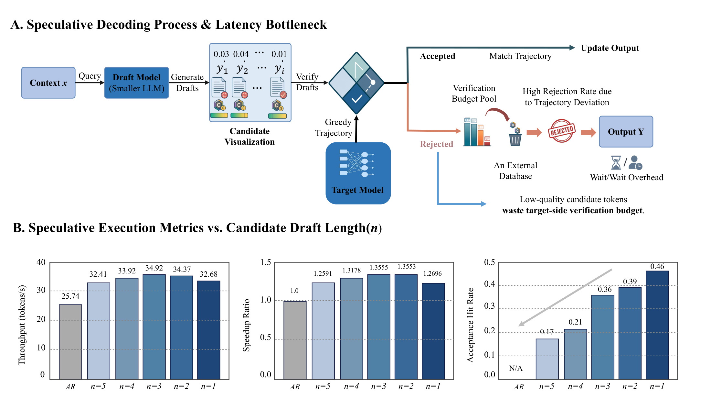
Figure 1上半部分展示草稿、目标轨迹与拒绝分支之间的关系；下半部分用Dolly、A100和Llama-2-7B配置说明，候选变长会使接受命中率下降，但吞吐并不单调增加。图中较短草稿可有更高命中率，吞吐峰值却在中间长度附近，这说明优化接受率本身也不够：一次接受几个词、为了接受它们计算多少节点、草稿与验证各自多贵，需要联合考虑。该图是研究动机和特定配置下的经验观察，并不是关于所有模型和长度的数学定理。图内部分数值与后续表格存在细微差异，精确复核时应以对应表格配置和记录为准，不能把示意图读成统一性能保证。
这里有一个容易误读的概念：“对齐目标模型”不表示训练一个新的偏好或奖励模型。估值模型依旧是固定的小语言模型，它用自己的条件概率给分支打分；目标模型只在离线提供一些贪心轨迹，用来确定分数的接受阈值。小模型的高分不自动等于目标模型一定会接受，因此滤器只能决定花不花验证资源，最终哪个词能够输出仍由目标模型裁决。低质量候选的比例下降与模型输出质量上升也是两回事，本文固定生成结果，实验的主要收益是执行效率。
研究选择确定性贪心解码还有重要意义。若每次都选择目标分布最大概率的词，给定相同前缀，就有明确的参考输出可以逐词比较。在温度采样时，保持同一随机输出或者保持同一概率分布需要另外的接受校正机制，当前论文没有证明过滤后仍满足这类条件。作者主动把随机解码列为未来方向。因而本文更直接适用于需要稳定输出的代码、结构化生成、确定性评测和部分低温服务，而不能据此假定任意聊天采样都可原样接入。
从研究问题看，本文需要同时回答三件事：小模型概率能否提供足够便宜的候选区分信号；通过目标轨迹得到的阈值是否比手工固定概率更适配目标；把评分与筛选的成本一起计入后，节省的验证是否还能转化为端到端速度。实验随后分别用无过滤检索基线、固定阈值对照、跨数据迁移和不同候选供应器检查这些问题。这样的证据链比单独报告筛掉多少节点更有用，因为仅有筛选比例无法说明最终是否加速。
还有一个值得保留的比较维度是质量约束与计算预算约束。若允许改变输出，直接使用小模型也可能很快，但这不再是同一任务；若不限制候选树大小，扩大覆盖也可能提升接受长度，却会增加目标前向的计算。本文选择固定目标输出和供应器，把优化范围压缩到验证前的分支决策，因此其方法价值需要在这两条约束同时成立时衡量。输出同一性让模型能力评测基本不变，但不代表所有系统指标也不变，过滤可能影响缓存命中、各轮执行时间和不同请求之间的调度公平性。
从既有方法关系看，草稿侧训练可以改善生成候选，检索数据库可以改善复用，而估值解决的是候选已经存在之后的资源分配。这些阶段相邻，却各有输入输出与成本。把阶段混在一起容易将更强供应器带来的收益归给过滤，也容易忽略对所有分支打分本身占用的显存与小模型前向。论文的可组合设计给了一个较干净的研究切口：固定上游，观察下游候选变化；后续仍应在多个树预算下重复这个控制实验，确认优势并非某个供应器预算过大的偶然产物。
2. 方法
2.1 候选供给接口与贪心参考输出
令目标模型为 $p_\theta$、词表为 $V$、当前上下文为 $x$。原文式(1)定义下一词决策，式(2)将其写到输出序列的任意位置：
符号解释：$V$ 为词表，$x$ 为输入上下文，$y_{\lt i}$ 是当前位置之前已接受的输出前缀，$p_\theta$ 为固定目标模型，$q_\phi$ 为固定估值模型，$\ell$ 为分支长度，$\delta$ 为低分位水平，$\tau_{tr}$ 为离线门槛。
反复执行得到参考输出 $Y^*(x)$。ValuSpec要满足的是 $Y(x)=Y^*(x)$，同时减少执行时间。这意味着上游候选不需要本身可靠，但接受输出时必须严格满足相同前缀下的贪心决策。实现上还需要一致的分词器、注意力掩码与并列最大值处理；这些是实现输出同一性的必要工程细节，不能仅凭小模型分数接近就省略验证。
候选供给接口输出树 $T_x$。主实验从外部数据库或前缀树取候选，固定64个draft token；扩展实验则让EAGLE-3构造动态树，预算约256。ValuSpec不要求改变这些构树过程，也不从空白生成新候选。它只读取物化后的树，对现有分支做评分，再把保留下来的结构交给目标验证。这种接口位置使供给优化与验证前估值可以叠加，但仍然要为上游已经完成的构树支付成本。
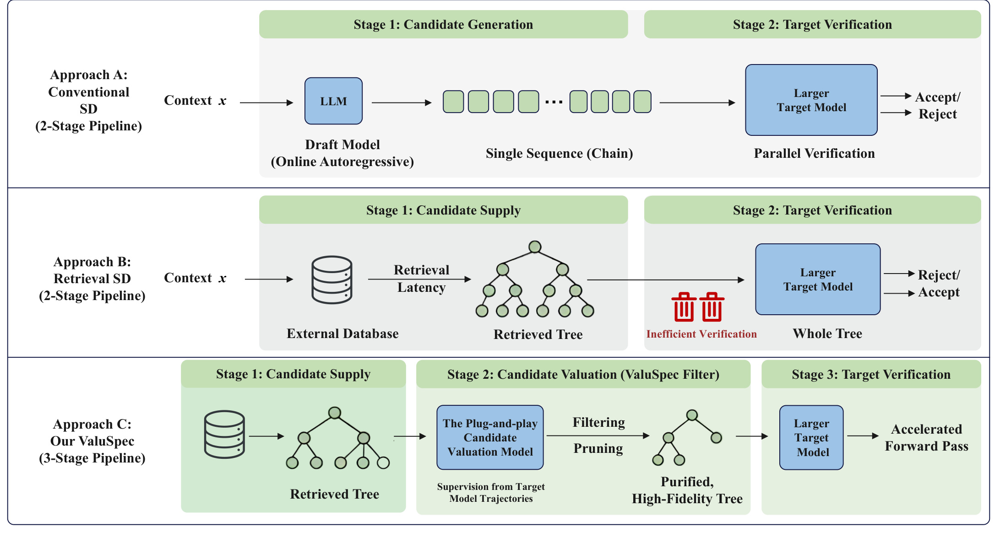
Figure 2第一行是传统在线生成草稿再验证；第二行将草稿来源换成检索数据库，却把检索树整体送给目标；第三行才加入估值，变成供给、估值、验证三个阶段。绿色区域和蓝色目标模块的分工说明，滤器的目标是减少进入昂贵模块的候选，不是加快数据库检索本身。图中“高质量”应理解成更可能匹配目标轨迹的统计判断，不能理解成过滤器已经代替目标验证给出确定正确性。对系统接入而言，关键接口是树结构、上下文与分数，而不是要求所有供应器共享同一种生成算法；这也解释为什么作者专门保留EAGLE-3供给过程不变来做组合实验。这一位置还要求树节点索引与目标注意力掩码同步更新，避免剪枝后把不同分支的上下文错误混在一起。
这一执行图还隐含一个重要的成本顺序：生成树的开销已经发生，过滤只能节省后面的目标验证。假设上游树中许多分支共享前缀，评分时是否能复用这些前缀的轻量模型计算，会直接影响净收益；若把每个分支独立展开并重复评分，可能抵消剪枝收益。图没有规定统一的缓存实现，论文也没有给出这一项的逐阶段计时，因此模块可组合性应理解为接口可接入，而不是无需实现优化就能达到相同加速。另一个输入约束是当前上下文必须一致：检索匹配只说明历史分支可被提出，评分仍要以当前请求的完整条件上下文计算，而不能简单复用历史请求的无条件分支分数。否则相同词串在不同语境中的概率差异会被忽略，目标对齐校准也失去原来的含义。
2.2 迁移监督与阈值校准
原文先把数据库划成不重叠的 $D_{cal}$ 与 $D_{eval}$。对校准上下文，目标模型运行确定性贪心得到完整轨迹 $b^*(x)$。固定的轻量模型 $q_\phi$ 再为这些轨迹计算平均对数概率。式(3)是整条分支的评分规则：
它用长度归一化减轻直接求概率乘积对长分支的惩罚。分数通常为负，数值越大表示小模型平均认为这条续写越自然。评分需要给定整条候选，因此可以在已有token上计算概率，不必让小模型逐词决定候选。这里归一化不保证不同长度、不同领域的分数分布完全相同，长分支含有一个关键错误也可能被其他高概率词平均稀释，这是后续误删和漏筛风险的来源之一。
随后用式(4)选择校准分数分布的低分位点：
主实验固定 $\delta=0.05$。这是一种保守阈值：参考目标轨迹在小模型下可以有多低的分数，再据此判断线上分支是否低得不值得验证。所谓迁移监督，是把目标轨迹的信息迁移到决策阈值，不更新 $q_\phi$ 参数，也没有额外梯度优化或新损失。离线得到的阈值可以复用于后续请求；这避免每次线上都调用目标模型重新标定。它仍需要提前运行目标模型收集校准轨迹，所以“无训练”不能读成“零准备成本”。
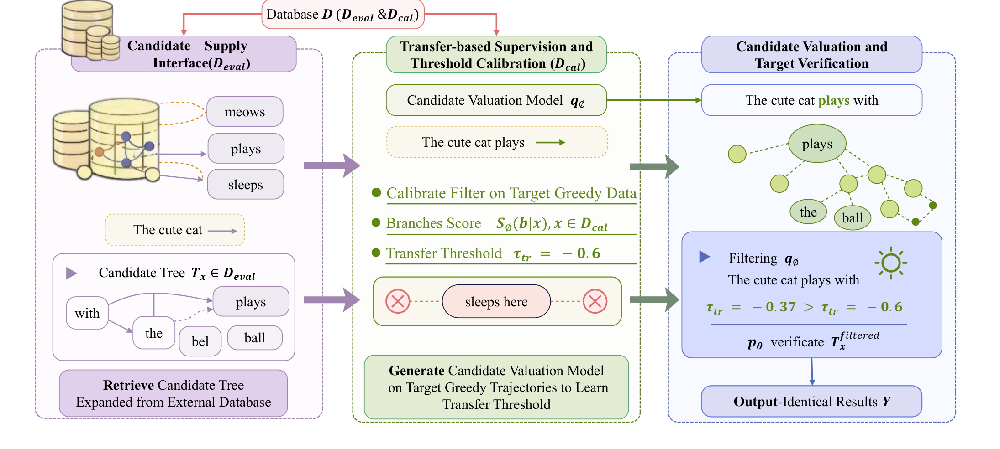
Figure 3把数据库分割、候选树、阈值和最终输出连在一起。左侧从评估部分提供候选，中间用校准部分的目标轨迹确定小模型的分数门槛，右侧在线给分支打分并剪掉不达标部分。图中的猫的续写仅用于说明哪些分支被保留，示例阈值不是全部实验固定采用的实际数值。离线与线上两条信息流必须分清：校准轨迹影响的是门槛，线上目标前向决定的是可接受token。若把评估上下文拿去构造其自身候选或者直接调阈值，可能夸大命中和吞吐收益，因此原文还要求评估部分内部的构树样本与解码上下文不重叠。图提供的是设计约束，实际复现还需要核对数据划分代码。
从数据流再看中间模块，目标轨迹在这里扮演的是参考分数样本，而不是监督标签加梯度训练。每一条参考轨迹最终贡献一个平均对数概率，所有参考分数组成经验分布，再由低分位位置确定单个门槛。这个设计能降低离线优化复杂度，但也压缩了目标与小模型之间的差异信息：不同位置、不同分支长度、不同任务的差异被汇入同一分数标尺。若请求结构变化，参考分布覆盖不足，仍可能产生误删。右侧小树的输出保持一致，是因为剩余分支重新走目标模型，而不是因为中间门槛已经证明保留下来的每条路径正确。图中从离线模块到线上模块的箭头只携带校准门槛及固定评分规则；它不意味着线上每轮都再生成一条目标参考轨迹。把这一点分清，才能准确区分一次性的校准成本和每轮必付的估值成本，也才能设计可复用的部署缓存。
2.3 候选估值、树验证与回退
线上计算所有分支分数后，式(5)保留不低于迁移阈值的分支：
保留树需要维持根到叶的前缀关系，目标模型通过树注意力或掩码在一次前向中计算各候选位置的条件分布，然后接受与式(2)一致的最长连续前缀 $\Delta$。若存在接受前缀，则更新 $Y\leftarrow Y\oplus\Delta$、$x\leftarrow x\oplus\Delta$。若过滤后为空树，或者验证后一个词也没接受，就执行原始目标贪心一步，随后继续循环，直到EOS。附录Algorithm 1完整写出了这两种回退分支。
输出同一性来自目标模型贪心验证和回退，而不是来自过滤器绝不犯错。 滤器错误保留分支只会多花验证成本；错误删除正确分支可能减少一次前向的接受长度，甚至触发回退，但不会允许小模型的错误词绕过目标模型进入输出。这个区别使阈值可以只追求效率而不承担最终生成裁决，也意味着“误删率非零”与“输出一致”可以同时成立。论文没有给出形式化新定理，其正确性建立在这条执行约束上；生产实现仍必须测试树掩码是否真正对应各自前缀，避免掩码错误破坏这一前提。
3. 实验结果
3.1 设置与重复工作负载主结果
主实验使用HumanEval代码生成、GSM8K算术推理、Dolly指令跟随。目标模型为FP16的Llama-2-7B/13B-chat，估值模型为JackFram/LLaMA-68M；它与目标属于相同架构家族并共享分词器以避免词表错配。数据按70%校准和30%评估划分，评估内部再分离构树与解码样本。主硬件是单张A100，默认batch size 1，温度为0。指标是端到端token吞吐和同硬件相对于AR的倍数，而不是生成准确率或线上用户收益。
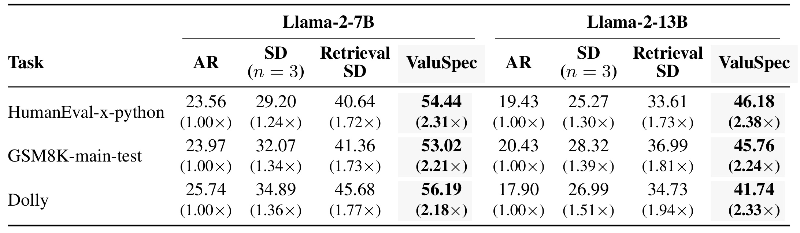
Table 1在7B HumanEval中给出AR 23.56、普通SD 29.20、无过滤Retrieval SD 40.64、ValuSpec 54.44 token/s。54.44除以23.56约为2.31倍，但对检索基线的增量约为1.34倍。13B HumanEval达到46.18，对AR 19.43约为2.38倍，是摘要中主设置的最高值；对检索基线33.61的增量约为1.37倍。GSM8K和Dolly也有提升，不过最大倍数不能代替六个任务模型组合各自的结果。该表比较的是固定64-token检索树下的执行方式，ValuSpec的长度参数为4，普通SD采用3，阅读时必须保留这个配置差异，不能称为所有方法参数完全一致。
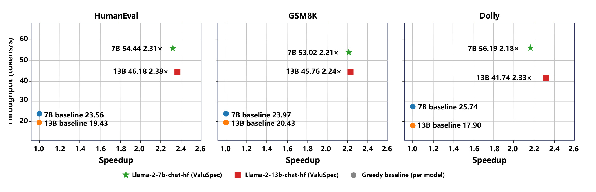
Figure 4把绝对吞吐与相对AR倍数放在不同坐标轴上。同样是较高加速，13B模型的绝对吞吐仍低于7B，例如HumanEval 46.18对54.44；这来自二者各自AR基线不同。因此不能由13B的2.38倍大于7B的2.31倍推断13B服务每秒生成更多词。图的主要作用是检查六个配置都受益，并帮助区分绝对速度和相对收益。它复述表1的数据，并未新增独立运行或误差统计，不能把图表同时出现当作两份重复验证证据。
对端到端结论还应关注计时边界。作者明确报告端到端解码吞吐，意味着论点应是把过滤成本考虑进去仍然有收益；但PDF没有逐项披露评分、树整理、KV更新与目标前向的时间分解，也没有完整总GPU小时。因而可以相信其报告的特定离线测量结果，却难以从中直接预测高并发生产服务的尾延迟。特别是70%的校准数据要生成目标轨迹，长期复用次数决定这笔离线成本是否值得。
3.2 阈值迁移与动态树组合
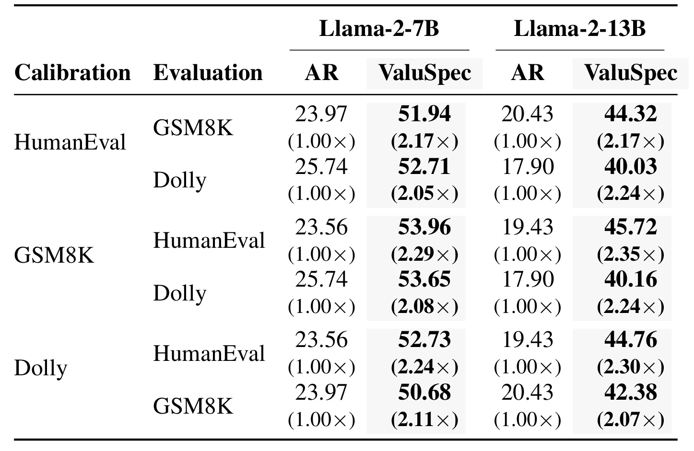
Table 2固定在一种数据集上校准阈值，再直接迁移到另外两种数据集。7B各方向对AR的加速为2.05—2.29倍，13B为2.07—2.35倍。举例而言，从HumanEval校准到Dolly评估时7B吞吐为52.71，低于同域Dolly的56.19，但仍高于AR 25.74。这说明门槛并非只对同一校准数据有效，也表明领域变化可能损失收益。实验覆盖的是三种公开生成任务之间的迁移，没有验证任意语言、专有业务文本或者模型版本更新后的阈值可靠性。表中成功迁移不构成永远无需重标定的承诺。尤其代码任务到指令任务的迁移并不等于真实线上分布漂移，后者还可能包括语言、用户与时间变化，现有三类数据并没有穷尽这些情况。
迁移实验的评价对象是吞吐收益保留程度，不是阈值估计误差本身。原文没有列出各迁移方向的实际门槛数值、置信区间和样本级分数直方图，所以无法判断收益下降究竟来自分数分布漂移、候选结构变化，还是两者共同作用。复现时应同时保留这些诊断量，而不只保存最终加速倍数。
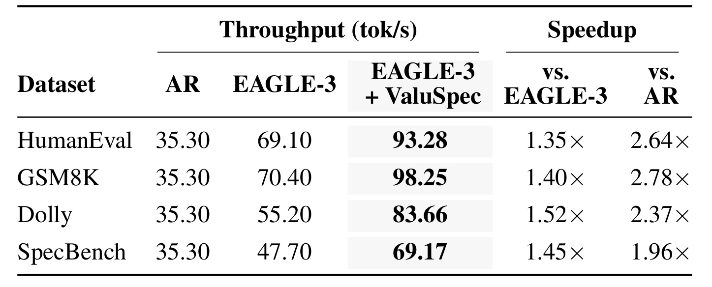
Table 3换成Llama-3.1-8B-Instruct目标模型，由EAGLE-3提供动态树。GSM8K从EAGLE-3的70.40提升至98.25 token/s，对供应器基线约1.40倍，对AR 35.30才是2.78倍。Dolly对EAGLE-3的增量最高为1.52倍，而其对AR为2.37倍；这两个最大值来自不同任务，不能拼成同一个“最高配置”。SpecBench则从47.70升到69.17，对EAGLE-3为1.45倍。结果支持生成侧优化之后仍有残余验证冗余，但不说明过滤收益与上游优化完全独立，也不意味着所有供应器都会有同样大的额外空间。
动态树组合比单纯改进检索树更能说明模块的位置。作者没有让ValuSpec参与EAGLE-3的生成或扩展，而是在整棵树已经形成后才筛选。若上游本身已高度精简，估值模型的额外前向可能超过省下的验证成本；该表证明的是这些任务、该预算配置里仍然可叠加，不能作为所有动态树的统一最优方案。原文第5.4节报告EAGLE-3保留候选的接受率从原始48.2%—71.4%升至86%以上，但接受率的分母已变成保留下来的候选，不应单凭比例增加就断言每轮接受token数一定同比增长。
3.3 Qwen补充、过滤行为和批量推理
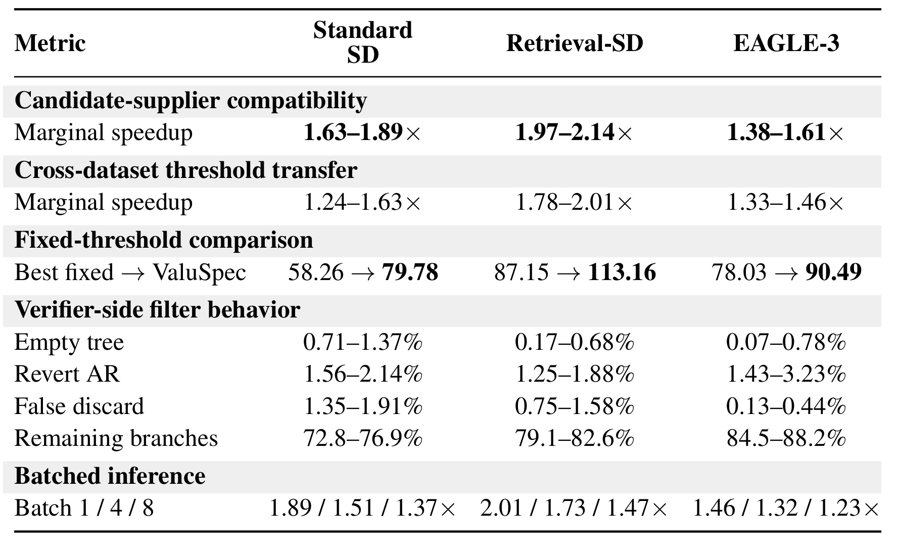
Table 4使用Qwen3.5-9B为目标、Qwen3.5-0.8B为估值模型，覆盖普通SD、检索树与EAGLE-3供应器。表中“Marginal speedup”是对相应供应器基线的增量：普通SD为1.63—1.89倍，Retrieval-SD为1.97—2.14倍，EAGLE-3为1.38—1.61倍，不能一概当成对AR。固定阈值对照在HumanEval扫描0.3至0.8，即便最佳固定值的吞吐也低于校准方法，例如检索设置从87.15到113.16。它支持目标轨迹校准优于该扫描范围里的统一门槛，尚不能证明优于一切自适应阈值算法。
同一表还给出实际过滤行为。检索供应器保留79.1%—82.6%的分支，空树率0.17%—0.68%，误删率0.75%—1.58%；EAGLE-3保留84.5%—88.2%，误删0.13%—0.44%。这些数据比只给加速更能说明代价：滤器并非删掉大多数候选，而是在较小比例的筛选下改善昂贵验证的有效性。与此同时，回退AR仍有1.25%—1.88%的检索情形，说明并非每轮都能多词推进。空树、误删和回退衡量不同事件，不可相加成总体错误率，输出正确性也不能由这些比例直接推断。
批量实验显示收益随batch增大而缩小。Retrieval-SD上的增量从batch 1的2.01倍降到batch 4的1.73、batch 8的1.47；EAGLE-3为1.46、1.32、1.23。更大批次能提高目标侧利用率，额外评分与结构处理的相对成本也会改变，因此单请求瓶颈与多请求吞吐瓶颈不相同。数据支持到batch 8仍有正收益，但没有覆盖连续批处理、请求到达率、不同输出长度混合或者服务级p99指标。摘要的大倍数应理解为指定离线测量，生产容量规划还需要压力测试。
3.4 长度敏感性与跨硬件复核
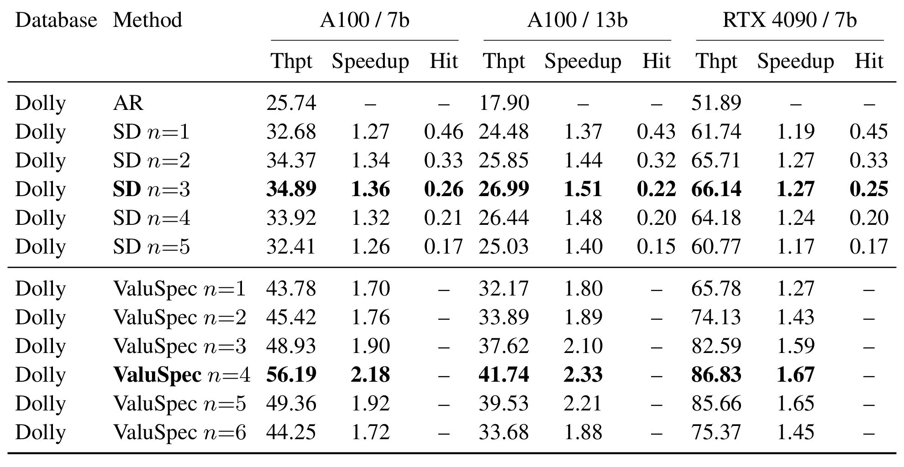
Table 5在同一Dolly任务中枚举长度，普通SD从1到5时A100/7B吞吐先升后降，长度3为34.89，长度5回落至32.41；命中率同时从0.46下降到0.17。ValuSpec固定64-token树预算时，长度4达到56.19，长度6降到44.25，说明过滤只把最优长度推向稍大位置，并未消除长候选的负担。A100/13B和4090/7B也在枚举中以4较好。表的价值是揭示存在最优工作点，不能据此认定所有新工作负载都应写死长度4；改预算、模型和硬件后需要重新扫描。此外，命中率越低并不意味着用户答案更差，因为最终仍输出同一目标贪心序列；变化的是算力利用。若输出一致性检查失败，就不能继续把吞吐优势放在这个表的同等约束下比较，必须先修复解码实现。
普通SD和过滤树的长度参数会改变不同部分的成本，因此这里还不能把最优长度的变化归因于某一个单独算子。更合适的后续检查是在每个长度下分别记录候选评分时间、目标验证时间与接受前缀长度，确认中间峰值来自有效推进和额外验证之间的折中，而不是计时粒度或输出长度差异。
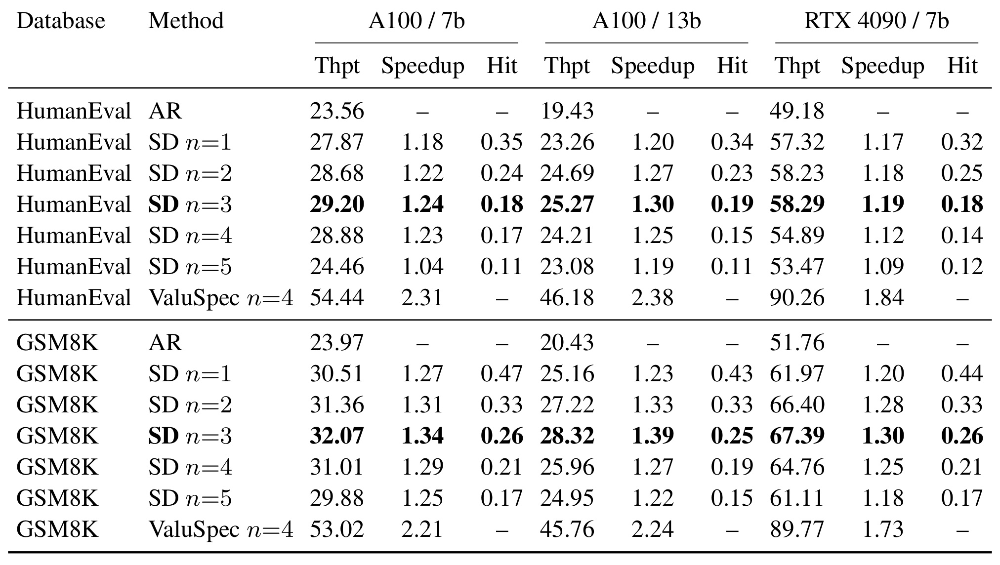
Table 6把类似观察扩展至HumanEval和GSM8K。HumanEval的A100/7B普通SD长度3为29.20而长度5只有24.46，已接近AR 23.56；ValuSpec长度4为54.44。GSM8K长度3为32.07而长度5为29.88，滤器设置为53.02。这里不是比较大模型准确率，都是固定贪心输出下的运行速度。还要留意表格中ValuSpec并未为所有长度和任务填满网格，所以它支持选定工作点优于列出的基线，不能推导一个完整的多维超参数响应面，也不足以量化不同随机划分的稳定程度。不同任务间的速度差还受到输出结构和长度影响。原文没有按这些因素进一步分层，所以这里最多能确认列出的模型和任务设置下方向一致，无法把差值解释成某一类文本天然更适合过滤，也不能推出任意长尾请求都有同等收益。
这张表也提示任务间的可复用局部模式并不完全相同：代码、算术推理和自由指令回复具有不同的词串规律。当前结果方向一致，但没有提供按输出长度、问题难度或重复程度拆分的收益，因此仍需避免把三项任务平均效果推广到低重复、长尾专有请求。
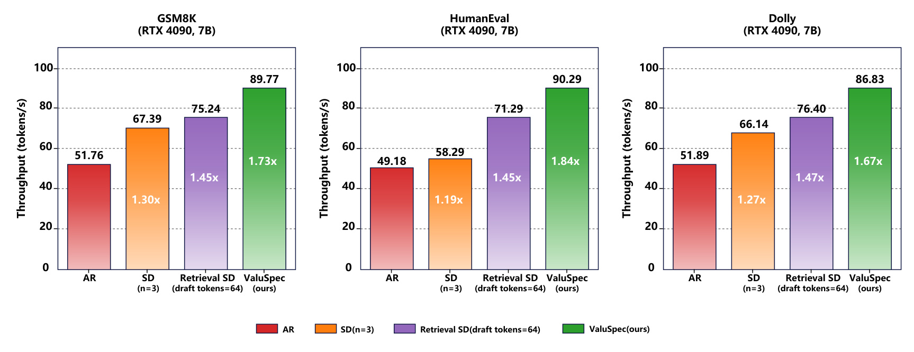
Figure 5在消费GPU上给出HumanEval、GSM8K、Dolly三项。HumanEval相对AR为1.84倍、GSM8K为1.73倍、Dolly为1.67倍，均低于主A100配置的相应最大收益。因为4090的AR吞吐本身更高，投机解码新增开销较难摊薄，滤器在不同硬件上的收益也有变化。一个应保留的细节是HumanEval该图标90.29，而表6为90.26 token/s；二者差0.03，不能未经解释就当成完全一致的测量。本笔记引用1.84倍的共同四舍五入口径，精确吞吐采用表6值并标记这一原文差异。
此外，第16—17页checklist明确承认未提供误差条、置信区间或统计显著性检验，也未报告完整项目算力。不同硬件结果的一致正向趋势有参考价值，但无法据此算出收益波动范围。论文也没有线上A/B用户指标或推荐排序质量实验。它证明的是固定模型固定输出下的解码加速可行性，而非最终业务效果；即使目标输出不变，服务调度、内存压力和请求混合也可能改变系统收益。
实验解读还需要区分接受率、接受长度与吞吐。接受率可以通过删除难候选提高，即使每轮接受的有效前缀略有缩短；只要验证成本下降更多，吞吐仍然可能增加。反过来，接受率很高也可能因为候选树过小而每轮只推进一个词，最终无法加速。所以复现时应同时保存每轮候选节点、被接受词数、目标前向次数和整段生成时间，才能识别加速到底来自哪里。原文的树大小与回退统计开始回答这个问题，但尚未提供所有任务的逐轮分布或长输出分位数，因此不能从一个平均值推断长尾表现。
阈值对照也有一个量纲问题。主评分是平均对数概率，而固定阈值实验用似然门槛描述，工程复现应核查是否做了指数变换及完全相同的长度归一化，不能把对数域负数与概率域零到一数值直接比较。作者图里的负阈值是说明性示例，表4扫描区间属于其补充实验设定，两者并不意味着实现矛盾。现有材料能核验的是固定阈值对照的报告结果，尚不能还原每个样本的评分和门槛选择过程；代码开放后应优先检查这部分以消除实现歧义。
对于批次差异，公平比较应保持相同目标模型、输出长度上限、结束条件和请求集合。若一个方法较早触发EOS或对输入做了不同截断，吞吐看起来可能增加，却不再满足相同输出前提。论文声明所有方法强制输出同一，这为比较提供了基础，但checklist的自报不能替代可执行复现。尤其表3所有任务AR吞吐都显示35.30，应该进一步确认作者如何汇总该基线、计时是否共用，不能自行解释为不同任务成本天然相同。这是值得向作者询问的测量细节，而不是据此否定已经给出的正向结果。
4. 总结
ValuSpec最有价值的地方是把候选供给与候选估值拆成两个可组合的执行阶段。输入是一棵现成树，固定小模型给分支计算平均对数概率，目标贪心轨迹只用于校准阈值，线上删除低分分支后依旧由目标验证保证输出。方法本身很轻，复杂度主要体现在如何准确计入评分成本、保存共享前缀结构、组织树注意力，以及让离线阈值在变化工作负载上保持有效。这使它适合被看作服务系统中的一个可测量优化点，而不是新一代生成模型。
对大模型工程，优先跟进的是验证成本与候选价值的分离。已经接入EAGLE-3或检索草稿的系统也可以测量验证前的冗余，不必先替换供应器。对推荐方向，直接相关的是LLM生成式推荐、解释生成或候选生成阶段中的确定性解码成本；传统CTR排序、召回向量计算和重排打分不能直接套用这棵生成树。可以迁移的是先用便宜信号筛选昂贵验证输入的思路，但推荐系统若删除候选可能改变最终排序结果，不能照搬这里由精确验证与AR回退保障的输出同一性。
需要保留四项明确边界。第一，当前仅验证贪心解码，随机采样的分布等价问题未解决。第二，收益依赖供应器剩余冗余与重复工作负载结构，过于精选的树可能让评分得不偿失。第三，代码未公开，尽管公式和伪代码清晰，树节点合并、KV缓存、计时边界与分支批量评分的实现仍影响复现。第四，缺少误差条、完整算力和生产尾延迟剖析，单A100与4090的离线吞吐不能直接换算成大规模部署节省。再加上校准和评估划分的种子、样本量及轨迹长度会影响阈值，当前数值应作为待复核实验报告而不是稳定性能承诺。
后续复现可以分三步。先实现小规模输出同一性测试，逐token比较AR与过滤树解码，覆盖空树、首词拒绝、部分接受和EOS；这一步发现的是正确性实现错误。再在固定候选树上记录过滤前后节点数、每轮接受长度、评分耗时、验证耗时、回退率和总吞吐，确认加速确实来自节省目标验证。最后做阈值跨域与batch扫描，分别比较同域校准、旧域迁移、固定门槛和无过滤方案，把部署后模型版本、分词器和负载漂移纳入监控。只有这三步都成立，才适合讨论更深入的生产集成。
论文提出的最大主结果为检索设置对AR 2.38倍，动态EAGLE-3组合对AR最高2.78倍；增量加速应另看对应供应器分母。与这些数字同样值得保存的，是其明确承认过滤器会误删、会回退，以及最终输出安全来自目标裁决。把这一点保持清楚，才能在复现时允许效率启发式出错，同时严格守住确定性输出一致这一系统约束。
对作者的进一步核验应聚焦三项可回答的问题：表3为何四种任务使用同一AR吞吐，表4固定似然门槛与平均对数分数如何转换，以及各树预算下筛选和目标验证分别耗时多少。这些问题直接关系到分母可比性、阈值复现和净收益解释，比泛泛增加更多基准更能减少不确定性。代码公开后还应保存同一候选树的无过滤与过滤执行轨迹，逐轮检查因误删损失的接受长度，避免只看过滤后漂亮的命中率而忽视解码推进速度。